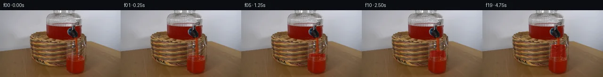

![首帧]()

Round 00
2026-11-04T23:51:46.403169+00:00像素候选变化代码 +188/−0inspection 更新
pixels f88dcef38d3b35c6 · code e274a84581f81f8c
查看本轮 generate.py 真实 diff
--- previous/generate.py +++ current/generate.py @@ -0,0 +1,188 @@ +#!/usr/bin/env python3 +"""Generate a deterministic, pixel-authored pour continuation from first_frame.png.""" + +from pathlib import Path + +import numpy as np +from PIL import Image, ImageDraw, ImageFont + +import artifact_io + + +ROOT = Path(__file__).resolve().parent +WIDTH, HEIGHT, COUNT = 256, 144, 20 + + +def interior_bounds(y: float) -> tuple[float, float]: + """Approximate the inside walls of the photographed tapered glass.""" + knots_y = np.array([65.0, 74.0, 99.0, 130.0, 136.0]) + knots_l = np.array([148.0, 146.0, 143.5, 145.0, 148.0]) + knots_r = np.array([172.0, 175.0, 178.0, 176.5, 173.0]) + return ( + float(np.interp(y, knots_y, knots_l)), + float(np.interp(y, knots_y, knots_r)), + ) + + +def smoothstep(a: float, b: float, x: np.ndarray) -> np.ndarray: + q = np.clip((x - a) / (b - a), 0.0, 1.0) + return q * q * (3.0 - 2.0 * q) + + +def add_rising_liquid(frame: np.ndarray, source: np.ndarray, t: int) -> np.ndarray: + """Tint the formerly clear part of the glass as its liquid level rises.""" + progress = t / 19.0 + # Near-linear volume gain with a very mild ease-in from the already active pour. + amount = 26.0 * (0.12 * progress * progress + 0.88 * progress) + top = 99.0 - amount + + yy, xx = np.mgrid[0:HEIGHT, 0:WIDTH].astype(np.float32) + left = np.zeros(HEIGHT, dtype=np.float32) + right = np.zeros(HEIGHT, dtype=np.float32) + for y in range(HEIGHT): + left[y], right[y] = interior_bounds(float(y)) + lmap, rmap = left[:, None], right[:, None] + + # A liquid surface in a cylindrical glass curves down very slightly at its sides. + center = (lmap + rmap) * 0.5 + radius = np.maximum((rmap - lmap) * 0.5, 1.0) + side_curve = 1.15 * np.square((xx - center) / radius) + surface_y = top + side_curve + + horizontal = smoothstep(-0.8, 1.0, xx - lmap) * smoothstep(-0.8, 1.0, rmap - xx) + vertical = smoothstep(-0.55, 0.75, yy - surface_y) + # Only synthesize the newly filled portion. The original liquid below y=100 remains photographic. + upper_limit = smoothstep(101.0, 99.0, yy) + mask = horizontal * vertical * upper_limit + + src = source.astype(np.float32) + lum = 0.2126 * src[..., 0] + 0.7152 * src[..., 1] + 0.0722 * src[..., 2] + glass_center = (xx - lmap) / np.maximum(rmap - lmap, 1.0) + + # Red absorption with a little of the photographed basket texture visible through the liquid. + target = np.empty_like(src) + target[..., 0] = 91.0 + 0.43 * lum + 8.0 * (1.0 - np.abs(glass_center - 0.43)) + target[..., 1] = 5.0 + 0.145 * lum + target[..., 2] = 1.0 + 0.050 * lum + # Preserve intense glass highlights and soften the fluid at its boundary with the glass wall. + highlight = smoothstep(165.0, 245.0, lum) + alpha = mask * (0.84 - 0.36 * highlight) + out = frame.astype(np.float32) + out = out * (1.0 - alpha[..., None]) + target * alpha[..., None] + + # Elliptical meniscus: dark far edge, warm near edge, and a small stream-impact dimple. + rx = float((interior_bounds(top)[1] - interior_bounds(top)[0]) * 0.49) + cx = float(sum(interior_bounds(top)) * 0.5) + normx = (xx - cx) / max(rx, 1.0) + ellipse_y = top + 1.05 * normx * normx + inside_x = np.clip(1.0 - np.abs(normx), 0.0, 1.0) + far_line = np.exp(-0.5 * np.square((yy - (ellipse_y - 0.20)) / 0.43)) * inside_x + near_line = np.exp(-0.5 * np.square((yy - (ellipse_y + 1.10)) / 0.55)) * inside_x + impact_x = 159.6 + 0.18 * np.sin(t * 0.9) + impact = np.exp(-0.5 * (np.square((xx - impact_x) / 2.25) + np.square((yy - (top + 0.75)) / 0.62))) + + def blend_color(array: np.ndarray, weight: np.ndarray, color: tuple[int, int, int]) -> np.ndarray: + w = np.clip(weight, 0.0, 0.86)[..., None] + c = np.array(color, dtype=np.float32) + return array * (1.0 - w) + c * w … diff truncated; 101 more lines …